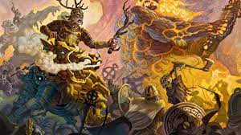
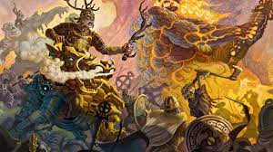

¿Quién fue Hel?
Hela o Hel era la encargada en el inframundo de los muertos sin honor en la mitología nórdica. Hija de Loki y de la gigante proveniente de Jötunheim, Angrboda, Hela reina sobre el Helheim, donde vive bajo una de las raíces de Yggdrasil, es representada como una mujer hermosa de un lado y cadavérica y putrefacta por el otro, dado que así es la visión sobre la muerte de los seres humanos.
Residencia
Su morada se llama Helheim o Hel y el camino que lleva hasta ella es Helway, que es tan largo que Hermod lo tuvo que recorrer en nueve días y nueve noches, siempre hacia el norte y descendiendo constantemente. El Helheim está rodeado de una muralla en la que se abren una o varias puertas y en su imperio corren ríos sombríos. Una de esas corrientes de agua se llama Slid. Ésta nace en el este, fluye hacia el oeste a través de valles infectados de veneno y está llena de barro y espadas. Un perro, Garm, vigila la entrada de una de sus cavernas, Gnipapellir.
El Acceso de Hel (Helway) es horrible, pues encadena al hombre moribundo con sólidas ligaduras que no pueden ser rotas, mientras la angustia roe su corazón y las sirvientes de Hela vienen cada noche a invitarlo. Ante los ojos del hombre moribundo se despliega una oscura y horrible región de brumas; ve que el sol, el puro astro del día, se desvanece y desaparece, y oye que los goznes de la Puerta de Hel (Helgate) crujen, y ésta se abre para recibirlo. La compañía de Hela es grande, pero tiene una morada lo bastante grande para todos; su imperio se extiende a lo lejos, sus palacios son prodigiosamente altos y tienen grandes puertas. Naturalmente su morada está hecha de sombras, pero tiene la apariencia de la realidad.